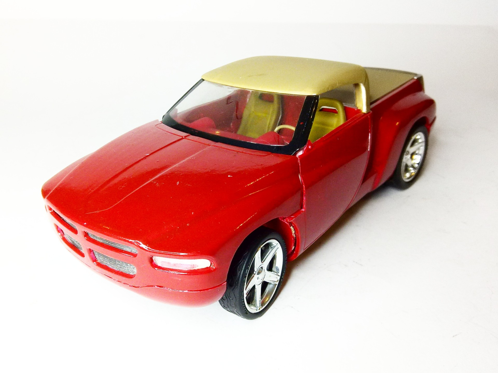
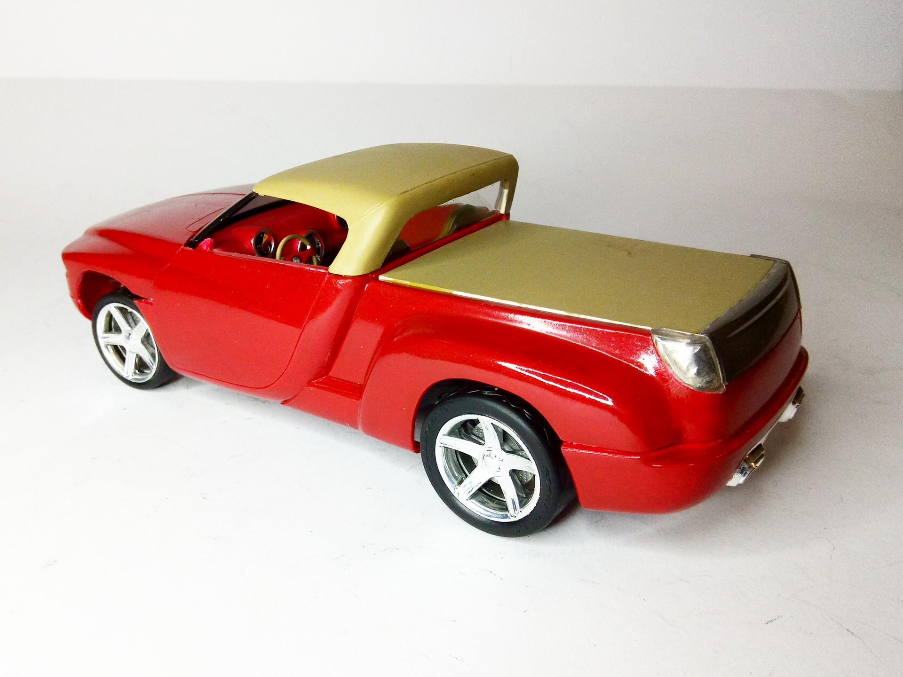
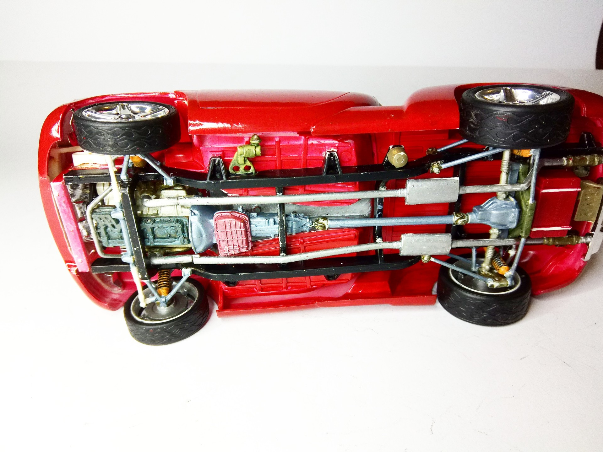

Auto e veicoli stradali · scale model archive
Dodge Sidewinder Show Truck
Dodge Sidewinder Show Truck — Kit: Revell, Scale: 1/24. https://www.youtube.com/watch?v=HRuSEQCXun0&ab_channel=JoshBrinson #1/24 #Revell #Dodge #Sidewinder

Photo gallery


English description
https://www.youtube.com/watch?v=HRuSEQCXun0&ab_channel=JoshBrinson
#1/24 #Revell #Dodge #Sidewinder
Descrizione italiana
Maggiori informazioni: https://www.youtube.com/watch?v=HRuSEQCXun0&ab_channel=JoshBrinson